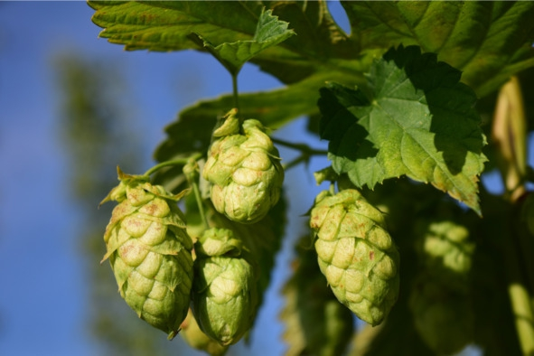
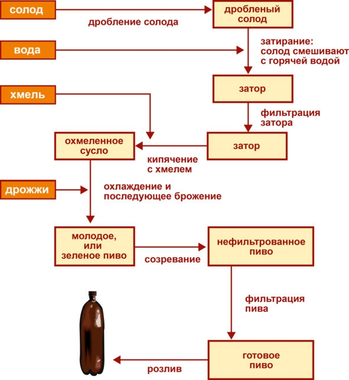

О культуре пития .. Технология производства пива..


Приготовление пива – один из самых сложных технологических процессов в пищевой промышленности. Для получения напитка высокого качества пивоварам нужно учитывать множество нюансов и тщательно подбирать ингредиенты.
Ингредиенты:
– солод – продукт, получаемый путем проращивания злаков. Для изготовления пива используется ячмень, прошедший соложение, – процесс, способствующий прорастанию зерна. После замачивания ячмень разбухает, внутри зерен начинаются химические реакции, расщепляющие крахмал на нужный для брожения солодовый сахар;
– вода – в пивоварении воду различают по составу и концентрации солей. Для некоторых сортов пива лучше подходит «жесткая» вода (с высоким содержанием солей), например, для мюнхенского. Есть сорта, сделанные исключительно на воде с низким содержанием солей, это пльзеньское пиво. Современные технологии позволяют регулировать концентрацию солей в воде с очень высокой долей точности, что упрощает производство;
– хмель – придает пиву характерный горький вкус, душистый аромат и отвечает за пенообразование. Заменить хмель в производстве пива без потери качества невозможно. Это уникальное растение, в состав которого входит более 200 веществ, отвечающих за вкус. Интересно, что для пива годятся только шишки женских растений хмеля;

Шишки хмеля – главное отличие пива от солодовой браги
– дрожжи – используют пивные дрожжи семейства Saccharomycetaceae, которые не встречаются в природе, а выведены искусственно специально для пивоварения. В зависимости от технологии брожения в производстве пива участвуют два вида дрожжей: верхового брожения (Saccharomycetaceae cerevisiae), подходят для таких видов пива, как портер, эль и стаут, а также низового брожения (Saccharomycetaceae carlsbergensis) – применяются при изготовлении лагерного и среднеевропейского пива. Разница между этими видами пивных дрожжей в том, что на окончательной стадии дрожжи верхового брожения собираются на поверхности (всплывают), а низового – на дне сусла. Это влияет на вкус.
Этапы производства пива
1. Приготовление сусла. Вначале ячменный солод дробят, но зерна не должны превратиться в однородную массу. В составе сусла обязательны большие и мелкие крупинки. Это называется солодовым помолом. В разных сортах пива соотношение крупных и мелких частиц отличается.
Затем солодовый помол смешивают с водой. Этот процесс называется «затиранием», а полученная смесь – затором. При добавлении воды ферменты в зерне начинают расщеплять крахмал на солодовый сахар. Для ускорения ферментации пивовары нагревают затор до температуры 76° C.
Далее готовое сусло фильтруют. Проваренный затор переливают из котла в специальное сито, закрытое снизу. В таком состоянии затертый солод находится некоторое время, пока на дне не осядут твердые частицы, называемые дробиной. Когда сито открывают, сквозь него и слой дробины начинает просачиваться чистое жидкое сусло, которое собирается в специальном котле для последующего варения.
2. Варка сусла. Полученное на предыдущем этапе сусло нагревают, доводят до кипения и добавляют хмель. Количество шишек зависит от сорта пива и предпочтений мастера. В каждой рецептуре используется разное количество хмеля. Варка сусла занимает 2—3 часа. В ходе этого процесса погибают все микроорганизмы и разрушаются ферменты, поэтому дальнейшие химические реакции невозможны. Пивовары добиваются наперед установленной плотности начального сусла, которое на этикетке готового продукта обозначается как плотность пива.
Далее сваренное сусло фильтруют от остатков хмеля и дают отстояться. На дне выпадают мельчайшие частички, которые не удалось отфильтровать на предыдущем этапе. Также на некоторых заводах ускоряют удаление нежелательных остатков центрифугой.
3. Брожение. Чистое сусло поступает через трубы на дно бродильных чанов, называемых цилиндроконическими танками. После того как жидкость остынет до нужной температуры, в чан добавляют дрожжи. Для пива верхового брожения перед добавлением дрожжей сусло охлаждают до 18—22° C, для пива низового брожения – до 5—10° C.
Спустя сутки после закладки дрожжей на поверхности бродильного чана появляется толстый слой пены. Это значит, что дрожжи успешно начали превращать сахар в углекислый газ и спирт. В ходе брожения выделяется много тепла, поэтому сусло нуждается в постоянном охлаждении, температура должна быть стабильной.
На этапе брожения пивовары следят за концентрацией углекислоты в чанах. При достижении максимально допустимого уровня газ отводят по специальным трубам. Брожение останавливается после того, как дрожжи переработают весь сахар на спирт.
4. Созревание. На предыдущих этапах получилось молодое нефильтрованное пиво, требующее дальнейшего созревания (не касается пшеничных сортов). Для созревания используют большие емкости из нержавеющей стали, а сам процесс длится от нескольких недель до четырех месяцев.
Во время созревания нужно поддерживать стабильную температуру и давление в емкостях, колебания недопустимы. На современных предприятиях технологический процесс контролирует специальное оборудование, способное автоматически изменить температуру и давление.
5. Фильтрация. После созревания пиво проходит еще одну фильтрацию двумя разными фильтрами, предназначенными для очистки от крупных и мелких частиц, а также остатков дрожжей. После этого пенный напиток становится абсолютно прозрачным и готовым к розливу.
6. Розлив. На заключительном этапе производства пиво переливают в тару разных видов. Перед розливом бутылки, кеги или бочонки моют, затем удаляют попавший внутрь воздух. Пиво является скоропортящимся алкогольным напитком, требующим стерильных условий. Без стерильности срок годности готового продукта составляет лишь пару дней. При розливе в стеклянную тару пиво часто пастеризуют, что существенно продлевает срок хранения.

Международная методика измерения горечи
Пиво может быть горьким из-за нарушения технологии производства (скисания), слишком высокой крепости (содержания спирта) и применения специального жженого солода. Однако в подавляющем большинстве случаев горечь пива зависит от использующегося хмеля (одного или нескольких сортов). На данный момент самой популярной методикой расчета является Международная шкала горечи (International Bitterness Units) – IBU, которая актуальна как для профессионального, так и любительского пивоварения.
Чем выше альфа-кислотность хмеля, длительнее варка и ниже начальная плотность сусла, тем больше в итоге получится горечь пива. Обычно горькие сорта хмеля добавляют вначале и варят 50—70 минут, а сорта, дающие аромат, – за 5—10 минут до конца варки.
IBU имеет шкалу от 0 до 100 (в одной из версий 120) и указывает на концентрацию в пиве горьких кислот, а точнее, миллионных долей (ppm). Сам по себе этот показатель малоинформативен и не дает представления о вкусе пива в целом, а лишь выражает числовое значение горечи для сравнения с другими сортами пива. Например, большинство американских лагеров имеют горечь до 12 IBU, «Балтика №3» – 8—15 IBU, а Guinness – 45 IBU.